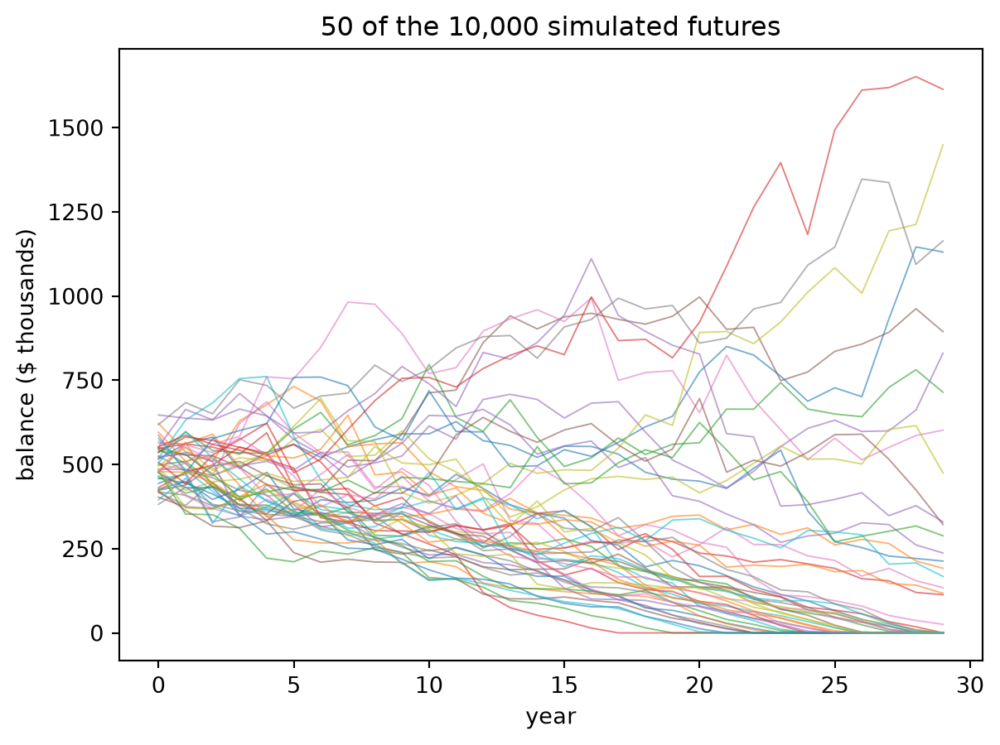

Let’s say we had $500,000 and we want to spend $20,000 a year. Well, then we know that in 25 years we’ll run out of money. It’ll all be gone.
We’ve also heard of interest. If we put the $500,000 in a bank, we’ll get some more money every year. So what if we were to make 2% interest every year? Will the money last longer than 25 years, if we spend $20,000 a year?
Now, another thing that happens over the years, especially over, say, 25 years, is that things get more expensive. 25 years ago, a meal probably cost a lot less. You could probably get french fries and a hamburger for $5, and today that might cost $10. If you are buying hamburgers, you may have to spend more each year. That’s called inflation.
But you might be getting money from interest, and the money you get from interest might be a little more than the money you have to spend from inflation. Suppose your money earns 5% interest and there’s 4% inflation. Then in a real sense you’re getting 1% more value per year. So how does that affect how long the money will last?
Remember, in this second part you’re not spending $20,000 a year. You’re spending $20,000 worth every year, based on the first year’s prices.
Write your guesses down before reading on. Nobody will check them. That’s the point.
Where to now? Both roads end up in the same place.
Leonardo of Pisa, known as Fibonacci. The picture is from 1850, so it’s a bit of a guess what he might have looked like. (Public domain, via Wikimedia Commons.)
Most people know Fibonacci for coming up with a sequence where you take the two previous numbers and add them. You might start with 1, 1. Add them, you get 2. Then you add the two previous ones: 1 plus 2 is 3, 2 plus 3 is 5. So the Fibonacci sequence is 1, 1, 2, 3, 5, 8, …
It has a lot of interesting history and all kinds of deep connections. It connects out to something called the golden ratio, which is what makes certain things look very aesthetic. They say the Parthenon follows the golden ratio in terms of its height versus its width. I’m not sure why, but that’s what I’ve found out.
But what’s interesting here is his Liber Abaci (“The Book of Calculation”). He wrote it in 1202, so this is a long time ago. It was where he showed merchants, Italian merchants, how to use Hindu–Arabic numerals to find profits, convert money from one country’s currency to another’s, and work out interest. And interest is what we’re looking at here.
Somewhere in there is a problem that’s basically ours: someone has money in the bank and takes a fixed amount out each year. When does it run out?
Click on the spreadsheet and see how your guess works out.
What’s great about a spreadsheet is that it’s a table, but you can change the numbers at the top. What if you start with $100,000 instead of $500,000? What if you start with $100? What if you were getting more interest? What if you’re getting less interest? You can change all the numbers at the top, and the great thing about spreadsheets is that everything changes. It lets you see when it turns red, when the money would run out. And if you actually spend less or get more interest, you might never run out of money, which is a good thing.
The yellow cells are the inputs. Each row is one year:
year
start balance
+ interest
− spending
end balance
1
500,000
5,000
20,000
485,000
2
485,000
4,850
20,000
469,850
…
Now try these:
Change spending to $25,000. What happens?
Change it to $5,000. What happens now? (Don’t skip this one.)
What’s the most you can spend so that the money never runs out?
The pattern
At $5,000 a year the balance never moves, because you’re spending exactly the interest (1% of $500,000 = $5,000). Spend less than the interest and the pile grows forever. Spend more and it shrinks, and it shrinks faster each year, because a smaller pile earns less interest. That’s why the last few years of the spreadsheet drop so steeply.
NotePercentages · Try it
Your spreadsheet has a “Continuous formula” cell up top that says the money lasts about 28.8 years. Your table ran out in year 29. Two completely different methods agree. Whenever two methods agree, you can trust both a bit more. You’ll use this trick all through the book.
The crossroads. You have the whole idea now, and stopping here is a complete chapter. If one of these questions is nagging at you, follow it. Every box ends with a way back here.
The table works, but it takes 29 rows. The shortcut needs two functions from precalculus.
The exponential is one of the most important functions in business because it represents continuously compounded return
\[
FV = PV e^{rt}
\]
We begin with logarithms, which are the inverse of the exponential. In this course, just like we use \(e\) as the default base for an exponential function, we use the natural log \(\ln\) as the default logarithm.
With those two, the table collapses into one line:
\[
T = \frac{1}{r}\,\ln\!\frac{c}{c - rW}
\]
where \(W\) is the nest egg, \(c\) is yearly spending and \(r\) is the interest rate (as a decimal). With our numbers, \(T = 100 \ln(20000/15000) \approx 28.8\) years.
Notice what happens when \(c = rW\) (spending equals interest): the bottom of the fraction is zero, and the formula says “forever”. That’s the pattern you found in the spreadsheet.
Here’s the same thing in Python, checked against the year-by-year method:
from math import logW0, c, r =500_000, 20_000, 0.01# year by year, like the spreadsheetW, years = W0, 0while W >0: W = W * (1+ r) - c years +=1T = log(c / (c - r * W0)) / r # the shortcut formulaprint(f"year by year: runs out during year {years}")print(f"formula: T = {T:.1f} years")
year by year: runs out during year 29
formula: T = 28.8 years
NoteSoftmax · how a chatbot turns scores into odds
A chatbot writes one token at a time. At each step it gives every token in its dictionary a score: bigger means “more likely to come next”. Scores can be any number, even negative, so they aren’t probabilities yet.
To turn scores into probabilities it uses the same \(e\) as continuous compounding. Raise \(e\) to each score, then divide by the total:
\[
p_i = \frac{e^{s_i}}{\sum_j e^{s_j}}
\]
This is called softmax. The exponential makes every number positive, and dividing by the total makes them add up to 1. And just as compounding turns a small difference in interest rate into a big difference in money, the exponential turns a small lead in score into a big lead in probability: a score 1 higher means \(e \approx 2.7\) times as likely.
Here the model has just written “The money will last 28.” and is choosing the next token:
from math import expscores = {"8": 3.0, "9": 2.0, "7": 1.0, "5": -1.0} # made-up scorestotal =sum(exp(s) for s in scores.values())probs = {tok: exp(s) / total for tok, s in scores.items()}for tok, p in probs.items():print(f"'{tok}': {p:.3f}")# second check: probabilities add to 1, and a score 1 higher is e times as likelyprint(f"sum = {sum(probs.values()):.6f}")print(f"p('8') / p('9') = {probs['8'] / probs['9']:.4f} vs e = {exp(1):.4f}")
'8': 0.657
'9': 0.242
'7': 0.089
'5': 0.012
sum = 1.000000
p('8') / p('9') = 2.7183 vs e = 2.7183
So the model will most likely write “28.8”, but about one time in four it writes “28.9”, which is where the confident-but-wrong answers come from. Some chatbots let you set a temperature: dividing every score by a number bigger than 1 flattens the differences, so the model takes more chances.
Each year the money you still have grows by a factor of \(1.01\), and another $20,000 comes out. Add up all those withdrawals and their lost interest and you get a geometric series.
A series is the sum of a sequence — an infinite sum. The sum of an infinite list of numbers can either be finite, so the series can converge to a number, or the sum can be infinite, so the series diverges.
We start with the basic geometric series:
\[S = 1+r+r^2+r^3+r^4+\cdots\]
Here \(r\) is a constant, the series converges when \(|r|<1\) and diverges when \(1\leq|r|\). In fact, we can find what number the infinite geometric series converges to. Write the series out for \(Sr\):
\[Sr = r+r^2+r^3+r^4+r^5+\cdots\]
Looks a lot like the series for \(S\) itself. Now subtract:
\[S-Sr=1\]
All the terms cancel! And then solve for \(S\):
\[S=\frac1{1-r}=1+r+r^2+r^3+r^4+\cdots\]
Now that we know \(S\), we can easily find other finite sums like
For the money, the ratio is \(1.01\) instead of \(r\), and we stop after \(n\) years instead of going on forever. Set the balance to zero and solve for \(n\):
Real investments don’t pay a steady 1%. Some years are great, some are terrible. Let’s say returns average 3% but swing a lot, then simulate 10,000 possible futures and count how many run out within 30 years:
import numpy as npimport matplotlib.pyplot as pltrng = np.random.default_rng(1)n, years =10_000, 30returns = rng.normal(0.03, 0.12, size=(n, years))W = np.full(n, 500_000.0)paths = np.empty((n, years))for t inrange(years): W = np.maximum(W * (1+ returns[:, t]) -20_000, 0) paths[:, t] = Wprint(f"ran out within {years} years: {(paths[:, -1] ==0).mean():.1%}")plt.plot(paths[:50].T /1000, lw=0.7, alpha=0.6)plt.xlabel("year"); plt.ylabel("balance ($ thousands)")plt.title("50 of the 10,000 simulated futures");
ran out within 30 years: 36.5%

The average return (3%) is higher than before, yet about a third of the futures still run dry. Bad years early on hurt the most, because they shrink the pile right when it has the most growing left to do.
NoteDifferential equations · where the formula comes from
Treat time as continuous. The balance changes at the rate interest in minus spending out:
\[
\frac{dW}{dt} = rW - c, \qquad W(0) = W_0 .
\]
That’s a differential equation.
If \(f(x)\) is a function, then \(f'(x)\) or \(df/dx\) is its derivative. We can make equations involving them. In these equations, we solve for \(f(x)\) using integration. We can also plug in functions by taking their derivatives to see whether they satisfy a differential equation.
For instance, we can look at the equation \(f' = k f\), and then we can try \(f=\cos(x)\). Then \(f'(x)=-\sin(x)\), so when we plug in we get \(\cos(x)=-k\sin(x)\). These are unequal so \(f=\cos(x)\) does not solve the equation. Next we can try \(f=e^{kx}\) so that \(f'=k e^{kx}\). Plugging in we get \(ke^{kx}=k e^{kx}\) so that \(f=e^{kx}\) does solve the equation.
Our money equation is almost \(f' = kf\), just with the \(-c\) tacked on. So try an exponential plus a constant, and plug in. It works:
Set \(W(T) = 0\) and solve for \(T\) to get the logarithm formula. The quantity \(c/r\) is the balance whose interest exactly pays for the spending: start above it and you grow forever, start below it and you hit zero.
Your spreadsheet was solving this equation all along.
Leonhard Euler in 1753, pastel by Jakob Emanuel Handmann. He had already lost the sight of his right eye in the late 1730s, and went on to publish more mathematics than almost anyone in history. (Public domain, via Wikimedia Commons.)
A differential equation \(y'(x)=f(x,y)\) specifies the slope of a solution curve \(y(x)\) at any point \((x,y)\) in the plane. Suppose we want to estimate the solution \(y(x)\) with a given initial value \(y(x_0)=y_0\). This can be done more simply by realizing that the slope is the “rise-over-run”, so the \(\Delta y = f(x,y)\Delta x\) is how much the \(y\) increases when we take a step \(\Delta x\).
For us \(f = rW - c\) and the step is one year, so \(\Delta W = rW - c\): interest minus spending, which is exactly one row of the spreadsheet. The 29-row table is Euler’s method with \(\Delta t = 1\). That’s why it lands close to, but not exactly on, the continuous answer of 28.8 years.
The random version, where returns are noisy and your lifetime is uncertain too, is Milevsky’s seventh equation, named for Andrey Kolmogorov. It gives the probability of outliving your money.
Can we look inside a model and see how it does a sum? A new field called interpretability tries to do exactly that. Researchers trace which parts of the model light up, and what each part contributes, as it works.
In 2025, researchers at Anthropic traced one of their models adding \(36 + 59\). It didn’t carry the one. It ran two paths side by side:
one path made a rough estimate of the size, something like “a bit over 90”;
another worked out only the last digit exactly: 6 + 9 ends in 5.
Put together, “a bit over 90” and “ends in 5” give 95. That’s a strange way to add, but it works, and nobody taught it that. It found the method on its own while learning to predict text.
Here’s the part worth remembering. When they then asked the model how it got 95, it described the school method: add the ones, carry the one, add the tens. Its explanation was a sensible story, but it wasn’t what it had actually done.
So checking a chatbot means checking two things: its answer (against your spreadsheet) and its explanation (which may be a plausible story rather than a report).
Ask an AI assistant: “I have $500,000, spend $20,000 a year and earn 1%. How many years will it last?”
Then check its answer against your spreadsheet. AI chatbots are often shaky at arithmetic, even when they sound very sure of themselves. If it’s wrong, can you work out what it did? Now ask it to write a spreadsheet formula or Python code for the problem instead of answering directly, and check that. Which way worked better?
What the chatbot sees
When you type “I have $500,000”, the chatbot never sees the number the way you do. Before anything else happens, your text is chopped into tokens: short chunks that the model has a numbered list of, a bit like a dictionary where every entry has a page number. The model only ever sees the page numbers.
Long numbers usually get chopped too. Many chatbots cut digits into chunks of up to three, so 500,000 might arrive as 500 · , · 000: three tokens, and nothing in them says “this 500 means five hundred thousand”. You learned place value in second grade. The model has to work it out from patterns in everything it read.
That’s one reason a chatbot can explain compound interest beautifully and still get the arithmetic wrong. Explaining is about patterns in words, which is what it’s built for. Arithmetic is about place value, which it never sees directly.
Open question
The simulation stops at 30 years. But how long will you live? That’s a probability question too, and it has its own equation (and its own slightly morbid spreadsheet). Next chapter.